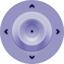

SLIDER CONTROLLER
Control Panel
Settings
Profiles
Profile 1
Profile 2
Profile 3
Profile 4
Profile 5
... Edit Profiles
About
SLAVE MODE
TIMELAPSE MODE
IN
OUT
+

SLIDE / FOCUS
LOCK AXIS
PAN / TILT
LOCK AXIS
KEYFRAME KINEMATIC
Slide
Pan
Tilt
Focus
KINEMATIC CONTROLS
Off
Linear
Parabolic
Inverse
Ease-in
Duration
Ease-out
Duration
RUN
START
STOP
Edit Profiles
EDIT PROFILES
START
STOP
Websocket
success
Successfully Connected to slider !
Websocket
Warning
Slider disconnected !
Websocket
Error
Slider disconnected !